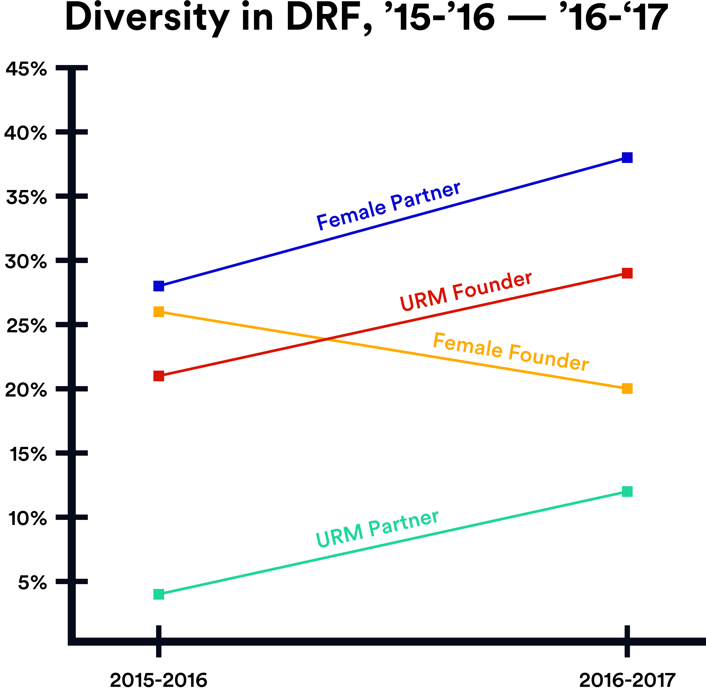

In 2012, we started Dorm Room Fund to create an onramp for students to become entrepreneurs and investors. Over the past six years, we’ve invested in over 250 student-led startups and built a community that consists of 400+ founders and 150+ investment partners and alumni.
In 2016, we published the first Dorm Room Fund diversity report to begin to measure how we are doing when it comes to the diversity of our team and understand how far we have to go.
Over the past two years, and as we write this report, we realize that we need to evaluate the barriers to increasing diversity before we can create a roadmap to seed this change.
In this report, we reflect on the shortcomings of the industry (including our own) and suggest ways to support underrepresented founders and investors. We share these views in hopes to promote greater self-reflection, particularly for those who identify with more prevalent groups in these industries. We have created this report to build into ongoing discussions around diversity and welcome your feedback, comments, or suggestions!
If you are an investor or founder who identifies as a woman or person of color, we would love if you can provide your thoughts to our survey [here]. We plan on publishing the results in the coming months and share our learnings to benefit the community.
After working on the first report, our hypothesis was:
If we can build a more inclusive investment team it will eventually lead to a more diverse portfolio. Furthermore, if our alumni go on to become investors, operators, and entrepreneurs, Dorm Room Fund has an opportunity and a responsibility to bring more diverse students into the startup community early as this impact will compound and help create a more diverse startup ecosystem.
We wanted to find out if this hypothesis was true.
In this second report, we decided to go beyond measuring the makeup of our team to measuring the three key constituents of the Dorm Room Fund ecosystem to gain a more holistic picture and to learn how we can impact diversity and inclusion in the tech industry.
In this year’s survey, we decided to look at the relationships between the Dorm Room Fund investment team, the investments, and the alumni activities across two-time frames: the 2015-2016 school year and the 2016-2017 school year.
In the venture capital industry, we far too often rely on diverse investors to source and invest in diverse founders. This notion of trickle down diversity comes at a cost. Not only does trickle down diversity place an implicit burden on diverse investors, but it does not immediately move the needle on portfolio founders. As an example, while women in venture capital represent 8% of investment professionals, women only receive 2% of venture capital funding.1 It is not the fault of women or people of color to withstand hiring or investing in people of a similar background. A recent report by Inc. Magazine, found that some women investors were reluctant to invest in other women,2 fearing that if the investment wasn’t unsuccessful, they wouldn’t receive support for the next female team.
At Dorm Room Fund, we have not witnessed a significant correlation between underrepresented partners and portfolio founders. While Dorm Room Fund’s investors are increasingly diverse, more female and underrepresented partners do not immediately translate into a more diverse community of funded founders.
We have made significant strides when it comes to the makeup of our investment team. From 2015 to 2017, female partners increased by 9% to 37% and URM partners increased by 8% to 12%.
While recruitment of underrepresented investors is an effort issue of its own, we need to find other ways to attract and support underrepresented founders. At Dorm Room Fund, we believe that creating points of access for underrepresented founders can elevate their trajectory of success and outcomes. In 2018, we launched Female Founders Track to broaden access for female founders. The nine-session masterclass seeks to support promising female founders and provide them with mentorship and guidance as they build their startup.
“We take on this diversity debt believing it is the same as the other types of “debt” and can be paid back as we scale. I think diversity debt is different because unlike other startup debt, the cost of diversity debt, the effort required to pay it back, rises dramatically with scale.”
– Phin Barnes, First Round Capital3
Culture starts at the top – but so does diversity. As founders hire employees that resemble them from the very beginning, the company employee base often grows with few or no women or people of color. As time passes, achieving gender and racial parity becomes an increasing challenge if companies do not prioritize hiring diverse talent from the beginning. Diversity debt accumulates over time as the founding team of a company hires within their social circle. The second employee then hires a team with a similar demographic which evolves to the point where the entire organization stems from a ‘patient zero.’
Often, the tech industry discusses the importance of building a team’s culture from day zero, but it is rare to hear conversations around creating a diverse team from day zero. In the same way that engineers may develop products that scale with technical debt, there are founding teams that scale with diversity debt. According to Phin Barnes at First Round Capital, “We take on this diversity debt believing it is the same as the other types of “debt” and can be paid back as we scale. I think diversity debt is different because unlike other startup debt, the cost of diversity debt, the effort required to pay it back, rises dramatically with scale.”
Here’s how diversity debt scales: 1) The company begins with its founders → 2) the founders hire VP’s → 3) VP’s hire Managers → 4) Managers hire EmployeesAcross founders in DRF community, we collected data on female and minority representation across 3 core team structures -- founding teams, complete teams, and board members. We found that...
Most strikingly, as these team’s began to hire their first employees, over 70% of them built teams without any URM representation, and 90% had zero female team members, period.
And yet the burden should not - and cannot - fall on founders only, as they race to make critical key hires in a hyper competitive talent market. To combat homophily in the workforce, VC firms too have a role to play. Over the past couple of years, investors and tech companies have implemented various human capital strategies to enhance diversity in the workforce, whether Kapor Capital’s Founders Commitment (whereby new portfolio companies agree to establish goals to enhance the representation of diverse employees), the Founders for Change initiative and Diverse Investors List (increasing diverse representation in venture and tech companies), or various companies adopting the Rooney Rule to improve hiring, implementing affinity or mentorship groups, and forming diversity and inclusion leadership positions.
Most investments in the venture capital industry start with a referral. Unlike later-stages of private investing that utilize intermediaries, the venture capital industry relies heavily on personal connections and networks to source investments. According to venture capital firm Edison Partners, “referrals are really the name of the game, because they give investors multiple points of reference on a company in a single action.” More specifically, Edison Partners suggests that referrals show that:
Unsurprisingly, the industry’s norm of warm introductions (or referrals) perpetuates and instills barriers for underrepresented founders and aspiring investors. To an investor, warm introductions provide ease of connection and a recommendation of quality. However, people are more likely to refer candidates with similar backgrounds, education, and values. As a result, venture capital firms end up hiring investors with similar perspectives, ultimately causing them to miss out on underrepresented talent.
Since Dorm Room Fund launched in 2012, we have instituted an open application for any student founder to be considered for investment. We believe an open application is the most equitable way for founders to get in touch and removes bias from our process. Since 2012, we have received applications from [x] schools and [y] founders outside of our immediate network. Secondly, we do not believe that investors are intentionally ignoring diverse, talented founders but that their networks are limited in scope. As a response, we created VCWiz – a tool where founders can find investors and get introduced without the need for a warm introduction.
“That’s called the Red Queen’s Race // You run this hard just to stay in place”
– Jay-Z, Legacy
Across founders, women and people of color have a higher bar to clear.
In rap-artist Jay-Z’s 2017 album 4:44, he raps, “that’s called the Red Queen’s Race // you run this hard just to stay in place.” What Jay-Z is referring to is the Red Queen in Lewis Carroll’s “Through the Looking-Glass” where the Red Queen has to adapt and run faster in order to sustain. The phenomenon of the ‘Red Queen hypothesis’ was originated by evolutionary biologist Leigh Van Valen to explain the law of extinction.
For women and underrepresented people of color in white-male dominated workplaces, they have to work harder and smarter than their white-male counterparts. Like the Red Queen in Lewis Carroll’s novel, underrepresented employees face higher levels of expectation in the workplace in order to sustain. In order to break through the ‘glass ceiling,’ women and underrepresented people of color have to exceed performance evaluations while also accepting less “glamorous work.” According to a study performed by the Harvard Business Review, “women of all races report higher levels of office housework, and both women and people of color (of both sexes) report less access to the glamour work.” In a report titled, “Obstacles to Female Leadership,” by the Pew Research Center, 40% of employees (both men and women) believe that higher-standards are the reason why more women are not in executive positions.
The bar is also higher for black and Latinx women to become founders. According to Project Diane and digitalundivided, 88% of Latina founders hold a bachelor’s degree, and 95% of black female founders hold a bachelor’s degree.
After surveying our portfolio company founders, of the 33% of undergraduate founders, only 11% of our undergraduate CEO’s were women and 6% were URM. Overall, 89% of funded undergrad CEO’s were men.
Similarly, when we asked our alumni community about their degrees when joining DRF, men were 2x more likely to join as undergraduates than women, and non-URM partners were 14x more likely to join during their first degree than their URM counterparts.
And rightfully so.
When we asked our founders about their experiences fundraising, 31% of men felt their gender had helped their raise, with the remainder expressing that it had no impact. In contrast, a third of surveyed women founders felt their gender had no effect, while two-thirds expressed that it had distinctly hindered them. Zero female founders felt aided by their gender.
These feelings have tangible impacts and translate directly into outcomes, as 50% of women raised less than they planned, with the remaining 50% raising exactly what they set out to. Zero female founders raised more than they set out to, compared to 26% of male respondents.
It's hard to imagine yourself as a founder or investor if the people you see and look up to don't look like you. A lot has been said about the lack of women and underrepresented people of color in venture capital firms, in boardrooms, as the heads of companies, and on cap tables.
In 2009, Professor Sapna Cheryan coined the term “ambient belonging”4 – or the feeling of fitting into an environment. This sense of ambient belonging is created when stereotypes are removed, and underrepresented populations are exposed to those who look like them. In her research, Professor Cheryan found that the existence of a stereotypical male ambiance in a classroom negatively influenced women’s aspiration to study computer science.
The concept of ambient belonging persists for underrepresented founders and investors in venture capital. According to research by Paul Gompers and Silpa Kovvali at Harvard Business School, representation in venture capital amongst women and underrepresented people of color has remained relatively fixed over the past twenty-eight years. Women make up only 8% of investors while 2% of VC investors identify as Latinx and less than 1% identify as black.
The power of role models and aspirational figures cannot be understated here. When we asked our partners about the one person in technology they admire most, Elon Musk was the most admired person for the second report in a row.
However, while almost 100% of partners selected a man they most admired during the last report, this year 24% of partners wrote in a woman’s name, with Sheryl Sandberg the most frequently written-in. All of those partners that wrote in a woman’s name were women.
When we asked DRF partners whether they identify as a leader, listener, or mediator within the community, 53% of male partners self-identified as a leader, whereas only 33% of female partners identified as one.
Within the DRF community, I identify closest with the following role.
From Male-Identifying DRF Partners
Within the DRF community, I identify closest with the following role.
From Female-Identifying DRF Partners
From a careers perspective, we asked current partners which careers they hope to pursue after graduation. Male DRF partners selected founder 2x as frequently as female partners, which while better than the 3x delta from last year’s report, still leaves a lot of white space for the role of inspirational mentors and role models.
On the bright side, this year more female DRF partners hope to pursue VC than male partners, 45% vs 35%, an improvement from last year’s survey when male DRF partners selected VC nearly 3X as frequently as female DRF partners.
Where do you see yourself in three years?
From Male-Identifying DRF Partners
Where do you see yourself in three years?
From Female-Identifying DRF Partners
Our findings conclude that there is a need for greater sponsorship in venture capital and entrepreneurship. With fewer women and people of color in executive positions at companies and VC firms, there is a significant information gap. Lack of information prevents underrepresented groups from participating or succeeding in these industries because they simply do not know how to.
Male partners feel twice as capable as their female counterparts. When we asked our current partners how capable they feel in comparison to peers at DRF, male partners selected "somewhat more capable" 2x as frequently as female partners. No one selected “much more capable”.
How capable do you feel in comparison to your peers at DRF?
From Male-Identifying DRF Partners
How capable do you feel in comparison to your peers at DRF?
From Female-Identifying DRF Partners
But our partners are confident relative to peers outside of DRF; almost all male and female partners selected "much more capable" or "somewhat more capable" compared to peers outside of DRF.
Women are 50% less likely to feel respected by the tech community.
When we asked DRF current partners if they feel respected and valued at meetings within DRF, most female and male partners selected "always" or "often."
But when we asked partners if they feel respected at events in the overall tech community, 58% of female partners feel respected at events in tech "always" or "often," while 76% of male partners said the same.
Percentage of Partners that Feel Respected “Always” or “Often” by the Tech Community
Percentage of Partners that Feel Respected “Always” or “Often” by the DRF Community
When we asked partners if they feel treated with respect, regardless of age, gender, or ethnicity by the DRF community, 75% of female partners selected "always" or "often" while 94% of male partners said the same. But when we asked the same question posed within the framework of the overall tech community, male partners selected "always" or "often" treated with respect 2x as frequently as female partners.
So while DRF is arguably one microcosm of the tech community, female DRF partners feel more respected within our community than in the broader ecosystem.
In her 2018 book, “Brotopia: Breaking Up the Boy’s Club of Silicon Valley,” Bloomberg journalist Emily Chang offers stories from dozens of female engineers who recount the harassment they have faced in the technology industry. These stories range from inappropriate comments in the workplace to sexual assaults. The technology industry, as a whole, has created an unwelcoming environment for women in the workplace. In a November 2018 survey by FTI Consulting and Mine the Gap, one-third of female respondents mentioned that they have received or witnessed unwanted physical contact in the last year.
The #MeToo movement struck a chord with many in the tech industry, and students are speaking up and speaking out.
When we asked DRF partners if they have, or know someone who has, experienced sexual harassment in the workplace, 73% of partners said yes. These are not seasoned business executives but students whose ages range from 18-30, so it’s clear that sexual harassment is pervasive and #MeToo knows no age. Moreover, when we asked partners how big in scope the problem is, 58% of partners said it’s more significant than the media is reporting.
How big in scope is the problem posed by sexual harassment in tech?
To DRF Partners
Have you or has someone you know personally experienced sexual harassment in the workplace?
To DRF Partners
When we asked the same of DRF portfolio founders, 40% of all founders responded they do know someone who has been affected by sexual harassment. Unfortunately, this figure climbs to 89% when considering the responses of female founders solely.
How big in scope is the problem posed by sexual harassment in tech?
To DRF Founders
Have you or has someone you know personally experienced sexual harassment in the workplace?
To DRF Founders
Looking forward, we surveyed our partners and founders on what they felt would be the most effective, actionable ways to address sexual harassment, with more female investors, industry-wide government and blacklists topping the list.
| 31% | – | More women becoming investors |
| 20% | – | Industy-wide governing body for reporting & legal advice |
| 17% | – | Blacklists for investors & tech leaders identified as harassers |
| 13% | – | Pressure from LPs to improve investor conduct |
| 13% | – | Wider-spread sensitivity training across the industry |
| 12% | – | More media coverage of sexual harassment incidents & solutions |
| 3% | – | Decency pledges |
Often in discussions of diversity, the conversation focuses on gender and race, separately. While diversity includes many other categories, the failure to acknowledge the differences in the lived experience of women of color is significant. According to research completed by Project Include, “While white men are 41 percent more likely to be executives than white women, they are 260 percent more likely than Asian women, and over 400 percent more likely than black women and Latinx women.”
In reviewing a data set collected by Richard Kerby of venture investors in California, representation of black and Latinx female VC’s is just over 1% which compares to 11% for white women and 6% for Asian women. While we do not want to minimize the struggles of all women in venture capital, it would be a disservice not to highlight the significant disadvantage that women of color have in the industry.
When reviewing funding outcomes for black and Latinx entrepreneurs, they are disproportionately disadvantaged compared to other demographics. According to research completed by nonprofit organization digitalundivided, black women-led startups on average raise $36,000 for their ventures compared to the average startup that raises $1.3 million. The staggering difference is propagated as nearly zero percent of startups led by black women receive venture funding. For Latinx women, their startups have raised a total of $1.36 billion over the past ten years which compares to the $84 billion of venture funding in 2017 alone.
At Dorm Room Fund, we acknowledge that we have a long way to go when it comes to increased representation of black and Latinx partners and founders. Our approach going forward is to be much more intentional on recruiting and supporting partners who are women of color.
“The diversity problem in Silicon Valley continues to not improve. It is a fundamental problem. The majority of the world is people of color. The majority of the country in 20, 30 years will be. It’s the most culturally influential demographic group on the planet. Why are we not participating in this?”
– Tristan Walker, CEO & Founder of Walker & Company
According to First Round Capital’s “10-Year Project”, companies with a female founder performed 63% better than their investments with all-male founding teams. Racially diverse teams also perform 35% better than their industry peers. Still, the number of venture capital dollars going towards women or people of color remains static. In addition, research produced by the Center for Global Policy Solutions suggests that the United States is forgoing an estimated 1.1 million business owned by people of color due to discrimination. These 1.1 million businesses would translate to approximately nine million jobs and boost the national income by $300 million.
The lack of funding for businesses owned by women or people of color is not due to a lack of demand. We live in a culturally-significant time in this country. More than ever, popular culture is shaped by those from underrepresented backgrounds. Multiple indicators point towards demand for products and services created by women and people of color. As a few examples, at the time of this report, the comic-book movie Black Panther is the highest grossing superhero film of all time, and rap-artist Drake is the most streamed artist in 2018 on Spotify.
In response to the sale of his company Walker & Company to Procter & Gamble, Tristan Walker noted, “The diversity problem in Silicon Valley continues not to improve. It is a fundamental problem. The majority of the world is people of color. The majority of the country in 20, 30 years will be. It’s the most culturally influential demographic group on the planet. Why are we not participating in this?”
Potentially less discussed are the benefits of diversity not immediately seen in performance metrics. We often hear about diversity benefiting groups by adding a different perspective or minimizing groupthink - what is not apparent are the decisions diverted due to having diverse backgrounds in a room. These decisions could include not investing in an unprofitable project or deciding to pass on a risky investment. Whether it be at a startup or in an investment meeting, having underrepresented backgrounds in the room adds a voice of dissent and skepticism not often found amongst homogenous groups. This form of risk mitigation may not show up in venture capital track records or company valuations but is critical in making better-informed decisions.
We are excited to announce the we are launching our next masterclass series in 2019 - [Underrepresented Founders Track]. Following the success of Female Founders Track and the insights learned from creating this diversity report, we are creating a series for Black, Latinx, and Native American founders to receive tactical advice through dedicated mentorship, exchange ideas in a safe community, and build scale-focused ventures. If you recently (0-5 years) completed your degree from college or graduate school and are thinking about starting your own startup, we would love to hear from you. Stay tuned to our Medium page for our official announcement!
Dorm Room Fund is committed to changing the face of diversity at the college level. We know we won’t be able to change the industry alone, so we’re asking for help. We’d love to hear from students, entrepreneurs, and investors everywhere, across industries, and from all backgrounds. If you have any suggestions on how we foster a more diverse inclusive environment, please let us know!